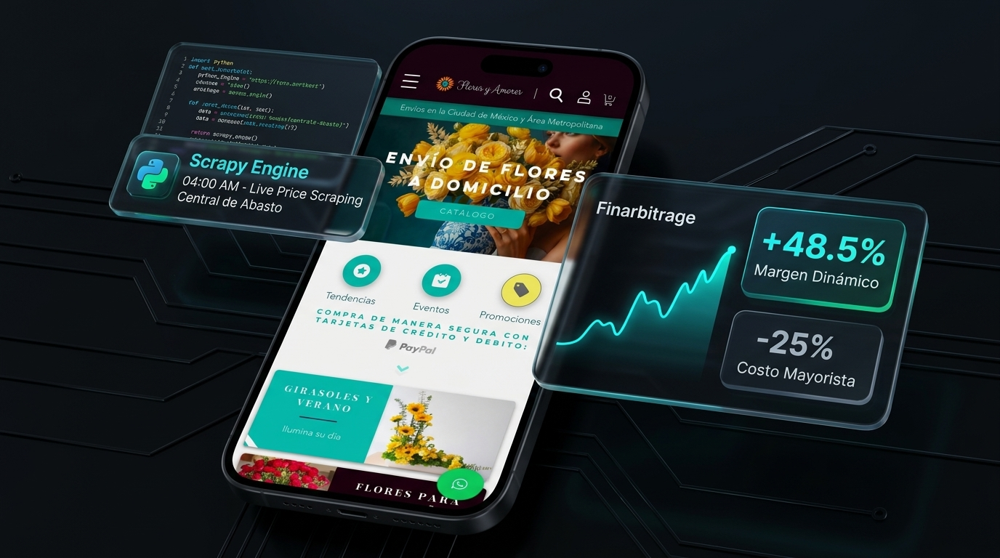

Estrategia Normativa y Financiera: Soluciones que Operan, Ahorran y Facturan.
Consultor e implementador con más de una década liderando modernización institucional en el Gobierno Federal, solvencia de auditorías ante OIC/ASF y modelos algorítmicos en el sector privado que resuelven tanto la escala pública como la rentabilidad comercial.
Blindaje normativo, regularización de millones de registros históricos y automatización de trámites administrativos y de atención ciudadana.
Arbitraje algorítmico matutino (centrales de abasto), reducción de costos de compra e infraestructura e-commerce de alta conversión.
Métricas de Tracción e Impacto Institucional
Facturación recurrente en e-commerce floristería de alta escala comercial.
Auditorías ASF y Órgano Interno de Control atendidas sin observaciones de padrón.
Ahorro en compras mayoristas mediante pipelines ETL y scraping automatizado.
Regularización integral de archivo histórico y sistematización de trámites públicos.
Arquitectura de Solución por Sector
Sector Público e Instituciones
Auditoría Forense y Padrones Masivos
Migración de millones de registros históricos hacia arquitecturas relacionales blindadas ante el OIC y la ASF.
Sistematización Normativa & Ventanilla Única
Reingeniería y reducción radical de fricción en 67 trámites dentro de la Ventanilla Única federal con cómputo O(1).
Sector Privado y E-Commerce
E-Commerce Transaccional de Extremo a Extremo
Pasarelas de pago (Stripe/Mercado Pago), ruteo georreferenciado en CDMX y rentabilidad asegurada desde el día uno.
Inteligencia de Precios, ETL & Scraping
Bots autónomos (Selenium + Scrapy) para monitoreo de subastas matutinas y reducción del 25% en costos de aprovisionamiento.
E-Commerce floresyamores.mx & Data Pipeline
Diseño, implementación y operación continua de canal digital D2C vinculado a bots extractivos en Central de Abasto para arbitraje automático de márgenes y optimización logística en CDMX.

Paris Alejandro Ramos de Cervantes
Economista egresado · Maestría en Administración · Especialista en Modernización Institucional & Arbitraje Algorítmico
"Paris Alejandro Ramos de Cervantes — Economista egresado con Maestría en Administración y más de una década liderando modernización institucional en el Gobierno Federal y modelos algorítmicos en el sector privado."
Traductor de alta fidelidad entre la normatividad hacendaria (SAT, OIC, ASF) y arquitecturas resilientes en producción. Disponible para dirección técnica estratégica, resolución de pasivos de nómina institucional y optimización algorítmica de márgenes comerciales.